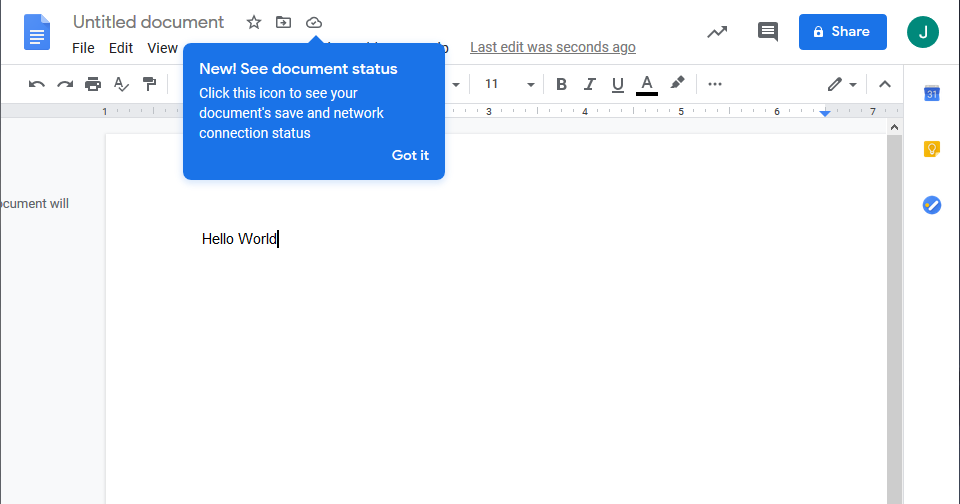
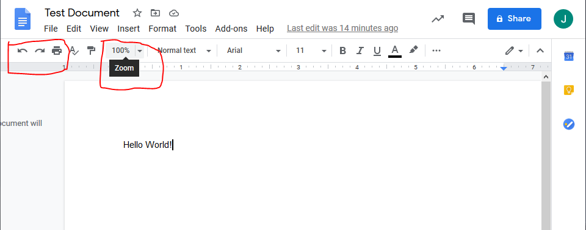
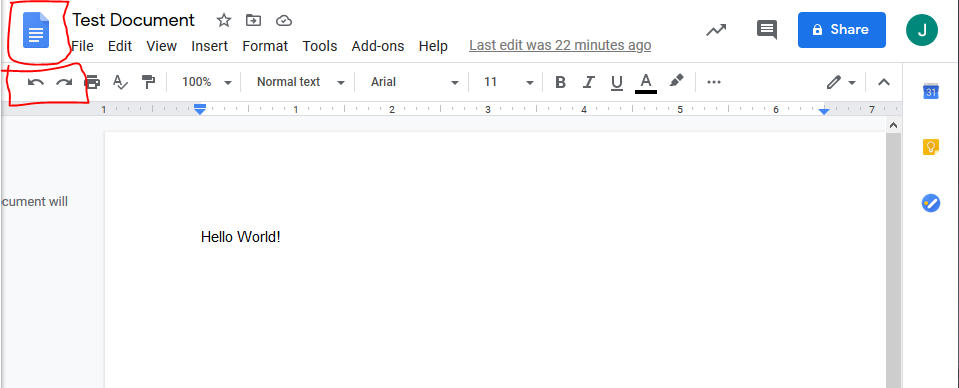
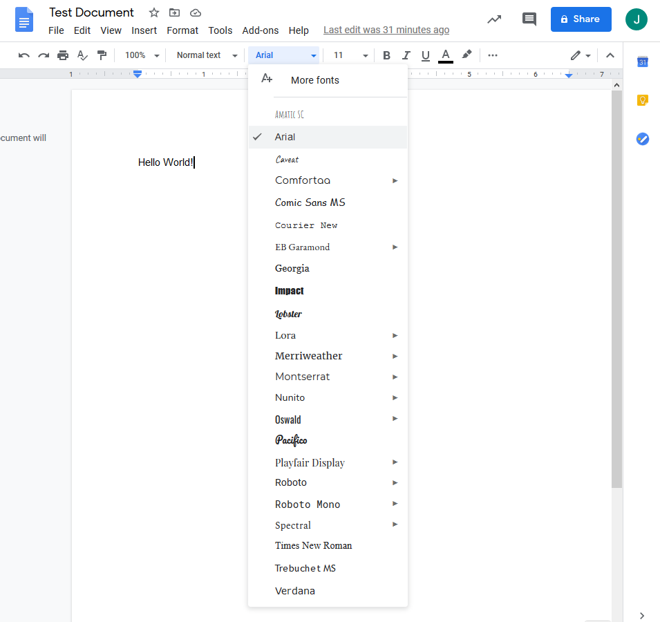
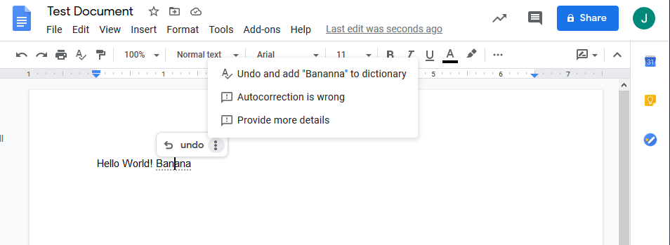
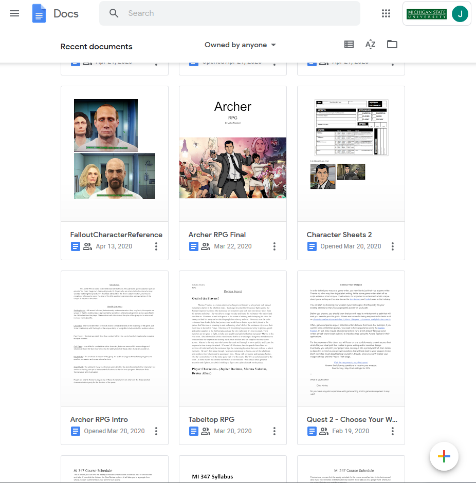
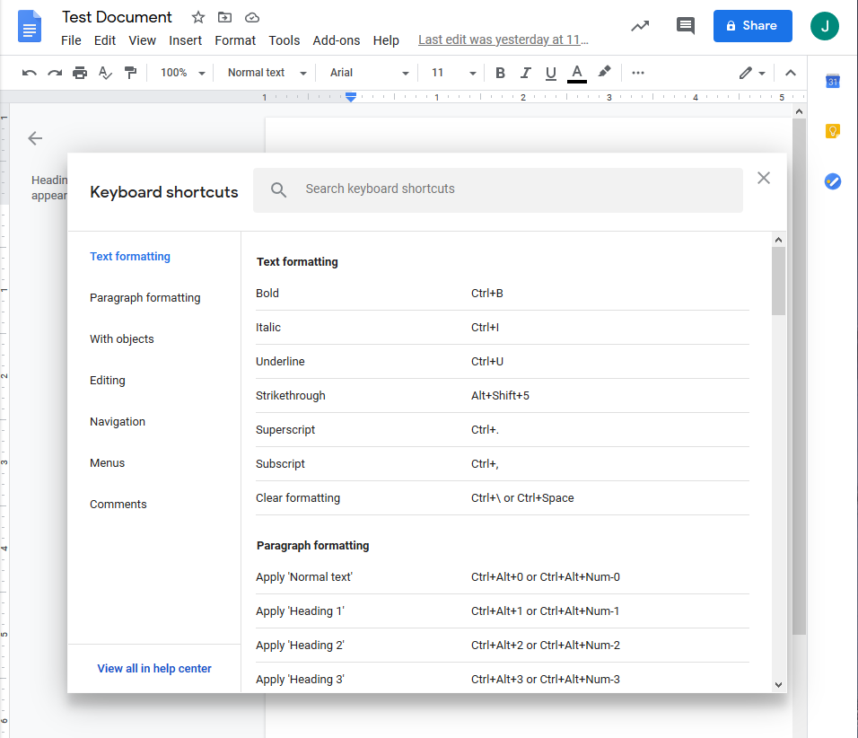
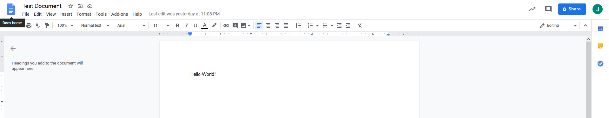
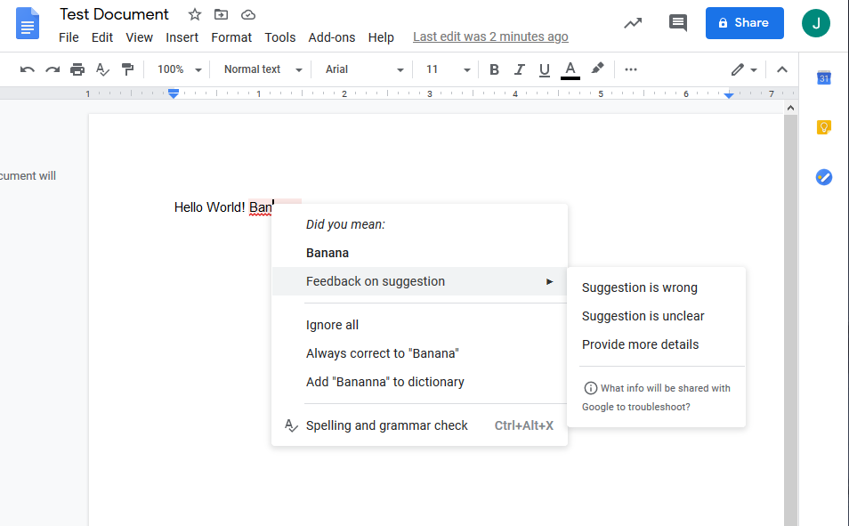
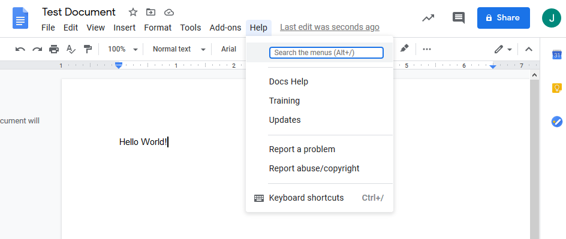

There are several features present in the Google Docs interface that provide information regarding the status of the system to the user in real time. As a new document is created a notification of one of these features is displayed. In this case the application is making the user aware of a feature that indicates the current network connection status and document save status. Additional features include information on whether the document has been shared and to whom it is visible, as well as document version history.

Navigation in the Google Docs interface is simplified by presenting the user with real-world conventions, rather than system-oriented terminology. As an example, when the user hovers over an icon or input field the interface offers a description of the selection’s function in concise language that is familiar to the user. Additionally, many functions are represented by easily identifiable icons. For example, the print function is displayed with a small icon depicting a printer, the undo action with an arrow, and editing function with a pencil.

Inclusion of functions such as undo and redo are included within the interface and provide the user with the ability to easily and quickly manage any difficulties that they might encounter leading to mistakes. Similarly, a home button is displayed at the top of the page which allows users to effectively reorient themselves in the case that they came to the page in error, or simply need to address another element of the application.

The Google Docs interface is structured in a way that is likely familiar to most users. The layout is much the same as a user might find in similar applications. The actions of functions are also made more easily identifiable in the manner which a user interacts with them. For instance, if a user were to change the font, they would be prompted to make their selection in a dropdown menu in which the fonts are listed but also displayed as an example of themselves.

The interface attempts to prevent problems the user may encounter as they work. One feature used to do this is an auto correct function which addresses potential user slips. If a user were to incorrectly type a word, the application attempts to account for the error and amend it in real time then alert the user a change has been made.

The Google Docs user home page implements are particularly user friendly because saved documents are not only listed by name, as they might be in folders stored on a computer, but also are displayed as a sample image of the document. By present user documents in this way, the interface provides some additional pieces of information to the user that might help them to recognize a document rather than struggle to recall it themselves.

There are many functions that serve as accelerators within the Google Docs interface. One such function is the inclusion of keyboard shortcuts which may serve the more familiar user in a number of ways. Accelerators like these allow for experienced users to interact with the application more fluidly and efficiently.

The Google Docs interface, while following the same format, maintains a more simplistic display than similar document editors. Being selective in the information which is displayed allows users to locate the information and functions they need more quickly and with less effort. Examples of this idea can be seen in the toolbar area at the top of document editing. Function descriptions are also concise, giving users the information they seek as efficiently as possible.

Many errors that a user might encounter in Google Docs are accounted for by methods of error prevention. However, when this is not the case or the user is interested in additional information regarding the error the application will provide notes to that end.

The Google Docs editor interface includes a help tab which provides documentation to users who can search by typing the function in question. The help menu also provides outlets for more general information as well as information on keyboard shortcuts and the ability to communicate concerns regarding the application.
